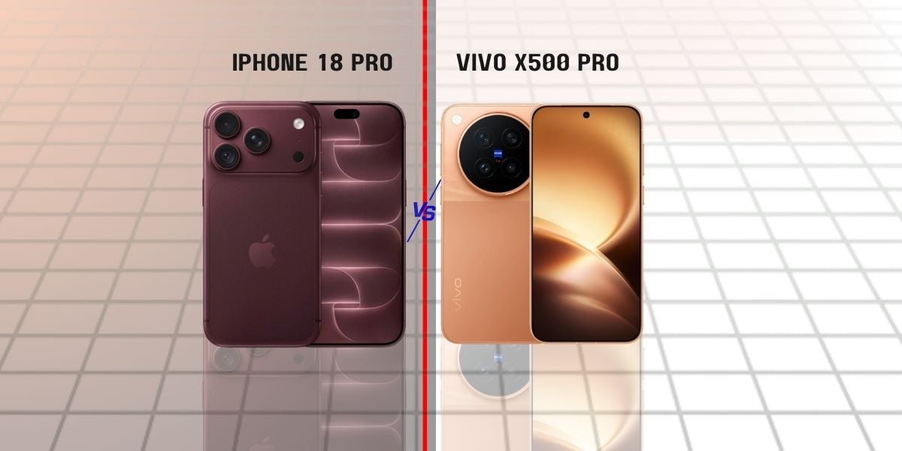
THE TECH EDIT
기술의 변화, 매일 한눈에.
카메라 · 스마트폰 · AI, 해외 테크 소식을 모아 전합니다.
최근 발행2026-10-05
새로 들어온 소식
LATEST STORIES최신 뉴스
전체 3,468개 기사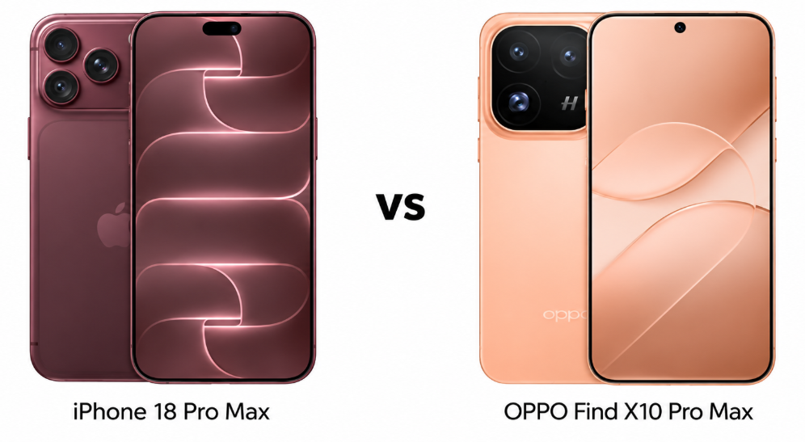
아이폰 18 프로 맥스 vs 오포 Find X10 프로 맥스: 애플이 정말 340달러 더 가치 있을까?

CCTV, 일부 배달 앱 '오픈 키친' 카메라가 벽이나 바닥을 향해 무용지물이라고 폭로
전 Sony 임원 요시다 슈헤이, GTA 6의 폭발적인 인기에 대해 언급: "미래에 이 정도의 관심을 받으려면 GTA 7이 나오거나 중국 제조사가 나서야 할 것"
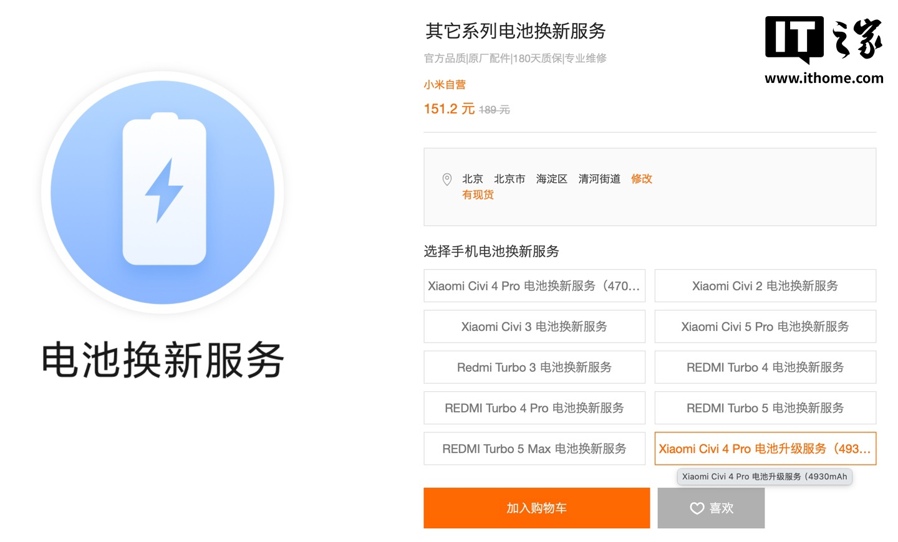
Xiaomi Civi 4 Pro, Redmi K70 스마트폰 배터리 업그레이드 서비스 추가, 기간 한정 20% 할인 151.2위안
시그마, 50-120mm F2.8 APS-C 카메라 렌즈 출시 예정
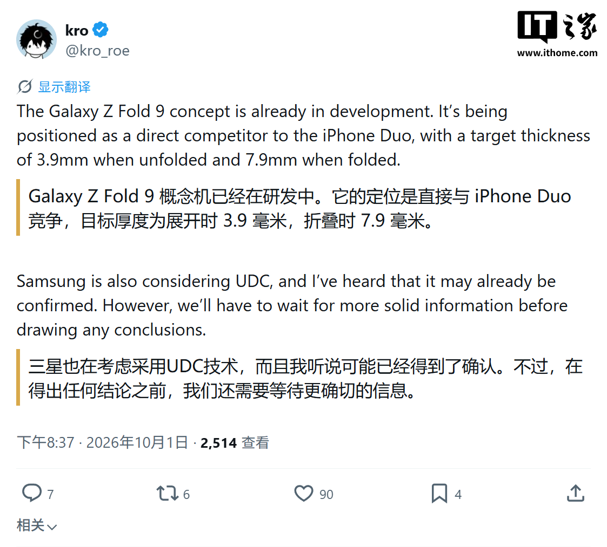
Apple iPhone 듀오에 대항: Samsung Galaxy Z Fold9 폴더블 스마트폰 목표 두께 3.9mm/7.9mm
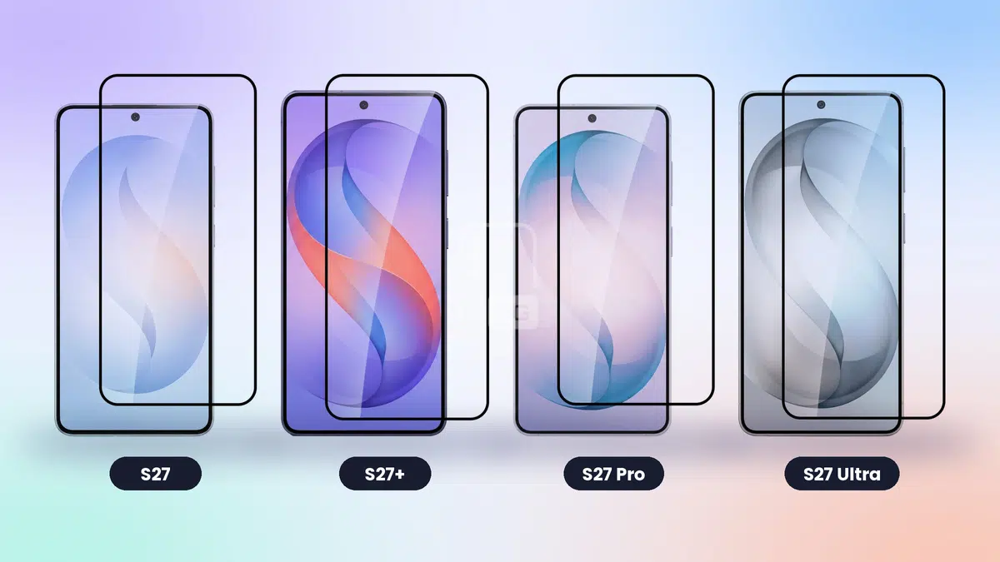
최초로 나란히 공개된 Samsung Galaxy S27 시리즈 4종 스마트폰 보호필름 유출
35% 인상: Samsung Galaxy A 시리즈 중 가장 저렴한 스마트폰 A17, 270달러로 인상
Samsung 디스플레이, 이달부터 Galaxy S27 시리즈 스마트폰용 AMOLED 패널 양산 계획
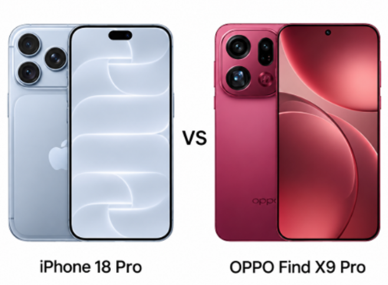
아이폰 18 프로 vs 오포 Find X9 프로: 애플 플래그십이 200달러 더 가치 있을까?
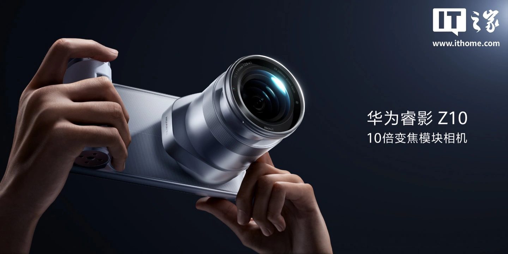
Huawei 리샤오룽: 루이잉 Z10 모듈 카메라 마운트는 탈착식 어댑터 링으로 구현되며, 미래 스마트폰 형태 변화 시 어댑터 링만 교체하면 호환 가능
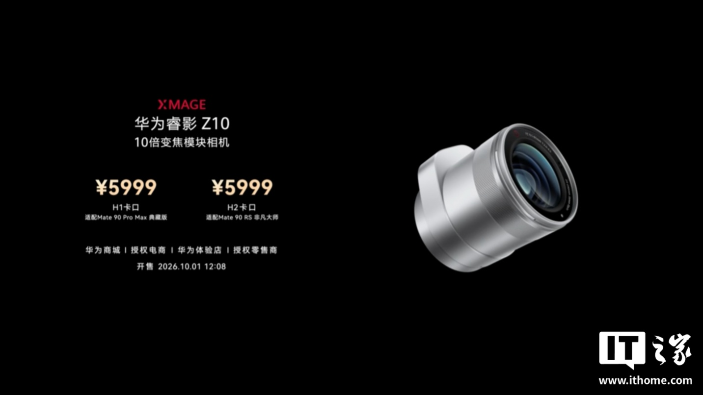
Huawei 리샤오룽, 루이잉 Z10 모듈 카메라의 62mm 필터 미지원에 대해 "레드메이플 카메라 가림으로 인한 색상 편차 방지를 위한 의도적 설계"라고 답변
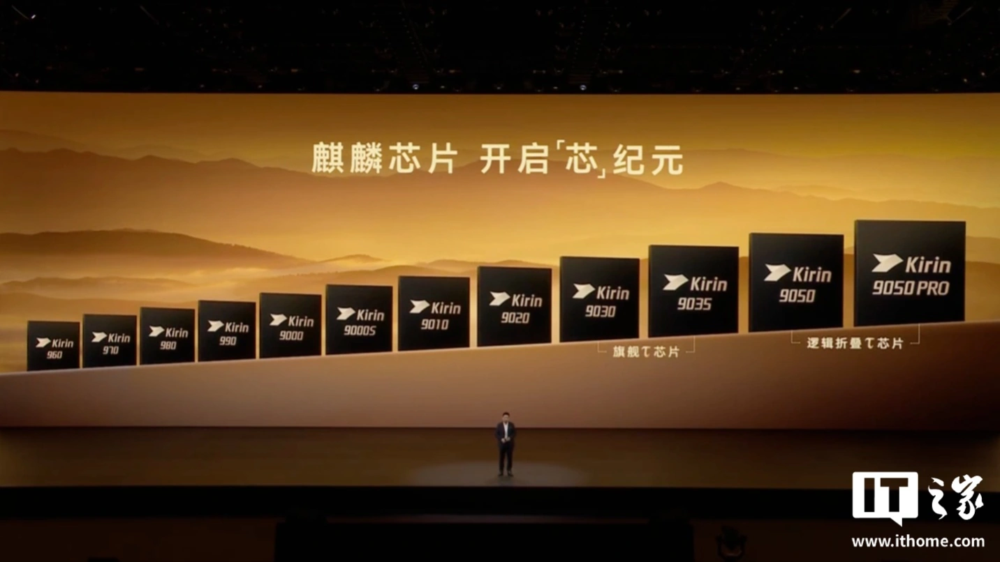
"자존심" 스마트폰, 더 강력한 "자존심" 칩으로 교체: Huawei Mate 90, 전 시리즈 타오 칩 탑재 발표, CCTV는 세계 반도체의 새로운 길을 열었다고 보도
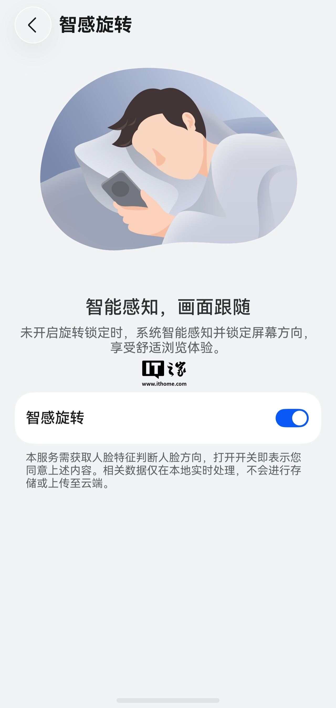
클래식은 영원하다: Mate 90 시리즈 스마트폰에 스마트 로테이션 기능 부활, Huawei 스마트 센싱 기능의 핵심 퍼즐 조각 완성

Huawei Mate 90 Pro Max 플래그십 스마트폰 첫 업데이트 내용 공개, 쿼드 SIM 트리플 스탠바이, 3D 다이내믹 포토 등 기능 탑재

Huawei Mate 90 스마트폰 출시: Kirin 9030 플래그십 칩 탑재, 5999위안부터
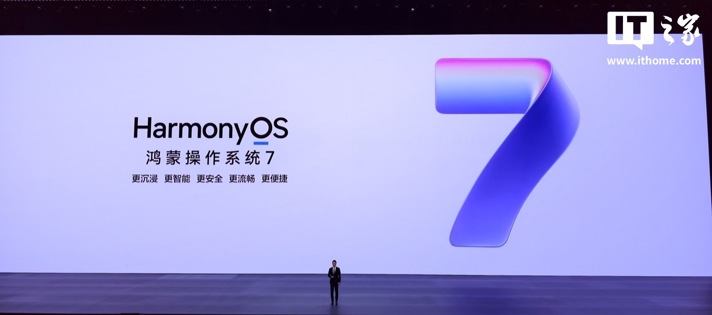
Huawei Mate 90 시리즈 스마트폰, 게임 어시스턴트 알림 기능 최초 탑재, 속도 및 크기 등 사용자 지정 설정 지원

Honor 관하이타오, Magic9 시리즈 스마트폰 재고 부족에 대해 "가난이 우리의 상상력을 제한했다"고 답변
Canon EOS R7 V 유출: APS-C 영상 전용 카메라, 2027년 말 출시 예상
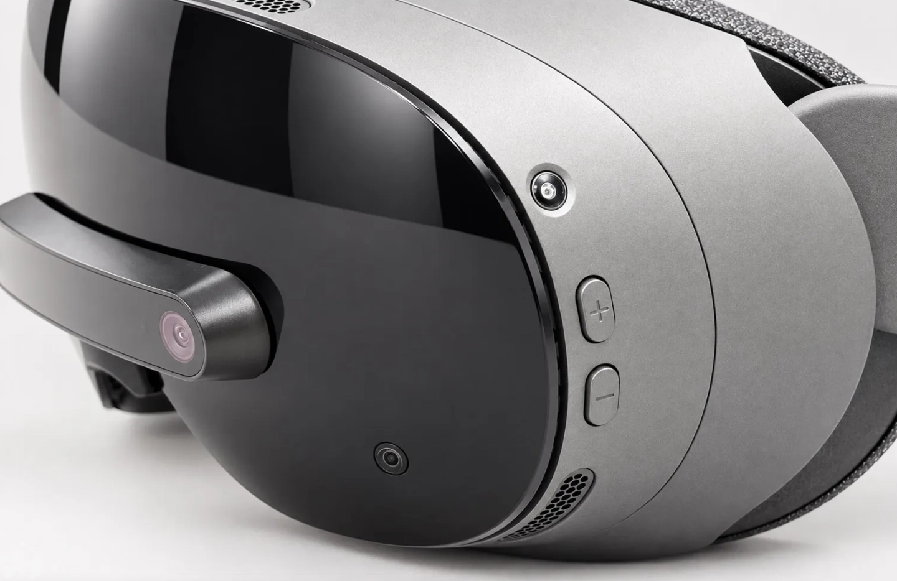
Valve Steam Frame 헤드셋용 타사 카메라 모듈 Arcturus Vision 출시: 고해상도 컬러 투과 효과 제공, 150달러에 판매

Huawei HarmonyOS 7.0 샤오이 스마트 비서 기능 조정, 향후 추가되는 기기 미지원
검색 결과가 없습니다
다른 검색어를 입력하거나 필터를 초기화해 보세요.